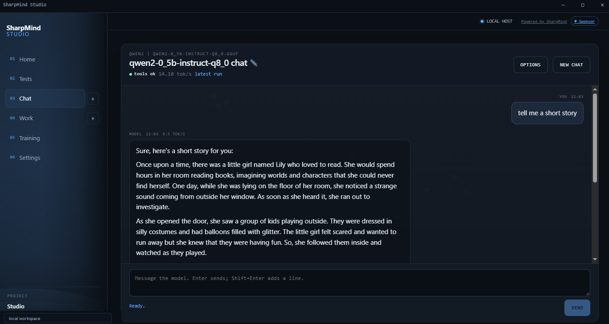

01
Train, on the right device
From-scratch pretraining stays on the CPU. LoRA fine-tuning and instruction tuning run on an NVIDIA GPU when the base model fits the engine.
pretrain · LoRA · SFT · CPU fallbackOne workbench for chatting, building datasets, fine-tuning with LoRA, and running models. Start on this PC. Add a SharpMind Compute host on Runpod or Vultr when the job needs more memory — and keep the same workflow, token and data layout.
SharpMind Studio turns a folder of text into a model you can chat with, then gives that model projects, tools and a workspace. Everything stays on your PC until you explicitly send a job to a host or a prompt to OpenRouter.
Data Factory, pretraining, LoRA fine-tuning and SFT — with checkpoints, validation and a promotion exam.
Local chat and Work, OpenRouter, or your own Compute host with an OpenAI-style API and GPU inference.
Models, sessions, checkpoints and exports stay yours. Encrypted keys, revocable phone pairing.
SharpMind Studio is the front end for the SharpMind libraries. Model formats, tokenizers, checkpoints, chats and run records live in one place — on your PC, or on a host you control.
From-scratch pretraining stays on the CPU. LoRA fine-tuning and instruction tuning run on an NVIDIA GPU when the base model fits the engine.
pretrain · LoRA · SFT · CPU fallbackLocal Docker, Runpod through its API, and Vultr or any Linux box through the built-in SSH setup. Start, test, log and stop from Settings.
Local · Runpod · Vultr · customSource → clean/filter → provider transform → review → export as chat or text JSONL, ready for SFT or pretraining.
saved .smmdf recipes · previewsBrowse HuggingFace GGUF repositories, download with resume, convert to .smm, and package exports for inference.
.smm ↔ .gguf · .smloraA Compute host serves one model per process with streaming chat, uploads, model switching and background training jobs.
/v1/chat/completions · SSE · bearer tokenProject context, scoped file and web tools, skills, and an explicit permission gate — local tools still apply with a remote model.
project memory · permissionsA local Qwen2 0.5B model answering a prompt. The header shows the model, the tool probe and the measured throughput — no cloud round trip.

The GPU engine trains adapters, not whole weights. Upload a packaged .smm base with the job, train on the host, then download a merged model or an adapter back to this PC. No data leaves except the job you explicitly send.
# on the host, /health is honest about it { "status": "ok", "accelerators": [{ "name": "ilgpu", "inference": true, "backend": "CUDA · cuBLAS" }] } # a fine-tune log that used the device Fine-tune: 8 adapters (rank 8, alpha 16). Engine: [Cuda] NVIDIA A16, 14962 MB, cuBLAS 12.6 Training 100 steps (float32)… # if the base is unsupported: Accelerator 'ilgpu' declined: LayerNorm, only RMSNorm Retrying on the CPU. Set SHARPMIND_ACCELERATOR_FALLBACK=false to fail instead.
Every host runs the same image contract: one model, ports 8080 and 5117, and a shared /data/SharpMind folder.
Full privacy and zero token cost. Run a packaged model or convert a GGUF. Pretraining works on the CPU.
Studio starts and stops the container with the saved token, port and folder — the compute image, or the GPU server image.
Studio creates the pod through the Runpod API, wires the proxy URLs and can terminate it. Account balance is required.
Create the instance, let Studio log in over SSH, install Docker and the NVIDIA toolkit, pull and run the container.
The wiki has the full setup path, the exact error messages, and what to do next.
Create an A16, add a key once, then let Studio install Docker and deploy the GPU image.
LocalBuild the combined server image on this PC and start it from the Compute card.
CloudDeploy a pod through the API, expose both ports, and terminate it when the run is done.
The repository is the source of truth. Build, test and run the Studio locally; publish your own server image when you are ready to use a host.
# clone and build git clone https://github.com/Integral2u/SharpMindStudio cd SharpMindStudio dotnet build SharpMind.Studio.slnx -c Debug dotnet test SharpMind.Studio.slnx -c Debug dotnet run --project SharpMind.Studio # open the local Studio http://127.0.0.1:5117 # add a host under Settings → Providers → Compute